OpenClaw安装部署说明
本文档主要介绍 OpenClaw 在 Linux 客户端或者服务器上的安装部署过程。我们推荐使用开源的 Linux 运维管理面板1Panel 进行安装部署，整个过程简单快捷。OpenClaw安装完成后，也可通过 1Panel 运维管理面板快速完成飞书渠道对接配置，方便大家快速实现基于飞书的个人 AI 助理。
资源环境准备
本次OpenClaw安装部署需要准备以下资源环境：
- 客户端或服务器准备：
- 操作系统：支持主流 Linux 发行版本（基于 Debian / RedHat，包括国产操作系统）
- 服务器架构：x86_64、aarch64
- 内存要求：建议可用内存在 2GB 以上
- 浏览器要求：请使用 Chrome、FireFox、IE10+、Edge 等现代浏览器
- 网络要求：可访问互联网
- 大语言模型API key
- 公有模型：如DeepSeek 、Kimi、OpenAI等大语言模型 API Key
- 本地模型
- 1Panel v2.1.0 安装部署：
- 可参考1Panel官方文档完成安装部署。具体参见如下：
https://1panel.cn/docs/v2/installation/online_installation/
基于以上环境，我们可以分为1Panel安装部署、大语言模型API Key准备、OpenClaw安装部署以及飞书渠道配置四部分完成整个安装部署过程，具体参见如下详细说明文档。
1Panel安装部署
1Panel安装部署时首先登录到Linux客户端或服务器端，然后按照以下过程快速部署即可：
步骤一：获取root权限
登录服务器后首先输入如下命令切换至root权限。
sudo su -
步骤二：执行在线安装命令
输入以下在线安装脚本命令开始执行安装。
bash -c "$(curl -sSL https://resource.fit2cloud.com/1panel/package/v2/quick_start.sh) "
步骤三：指定1Panel安装目录
安装脚本会首先提醒设置指定安装目录，没有特殊情况直接回车选择默认即可。
设置1Panel 安装目录（默认为 /opt）：
步骤四：完成Docker的安装
指定目录后，安装脚本会自动检测当前服务器是否安装Docker，未安装时，会询是否安装，此处输入“y”确认安装即可。
检测到未安装 Docker，是否安装[y/n]: y
步骤五：镜像加速器配置并设置默认参数
Docker安装完成后，会如下图所示会分别提醒是否配置镜像加速并逐步提醒设置1Panel的端口、安全入口以及面板用户密码等，根据个人情况完成设置即可。其中端口需要保证已开通。
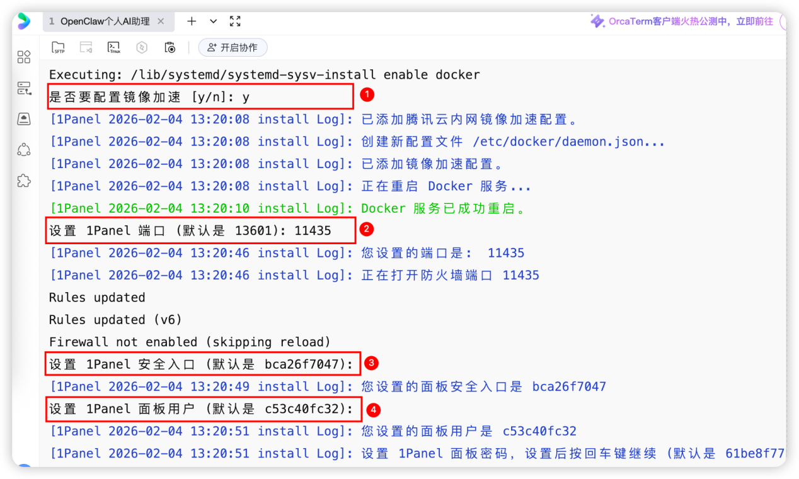
步骤六：获取1Panel面板的登录信息
统一设置完成后，系统会自动打印出1Panel的登录访问信息，如下图所示，大家保存方便后续使用。
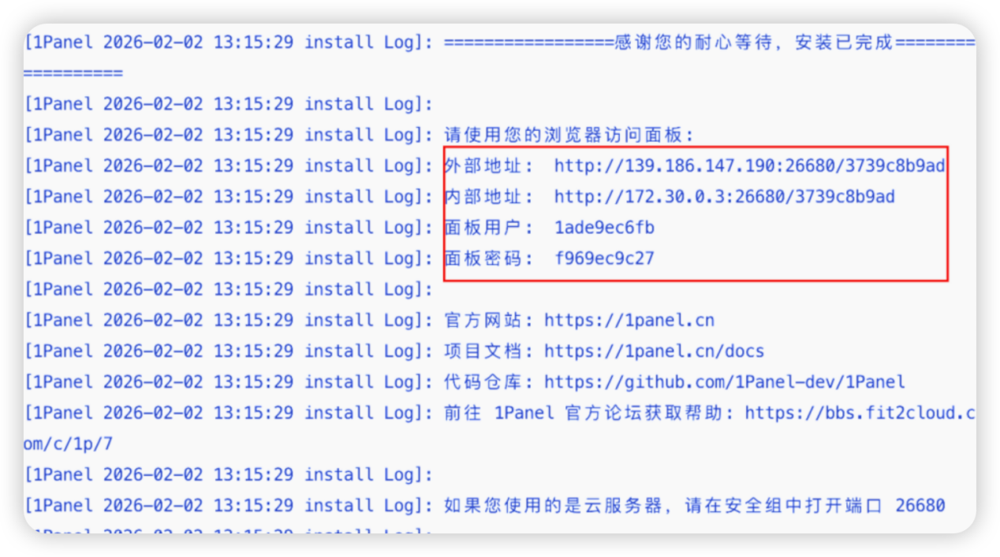
步骤七：验证1Panel部署成功
将步骤六中获取的外部地址输入浏览器即可进入1Panel面板登录页面，输入对应的面板用户和密码，确认1Panel已经安装部署完成。
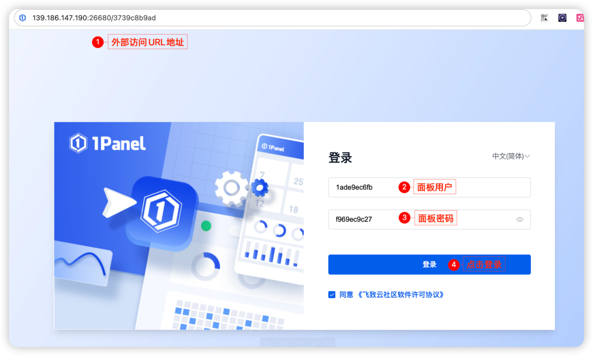
步骤八：1Panel访问地址设置
进入面板后，切换到“面板设置”页面，将默认访问地址设置为1Panel访问的公网IP，方便后续部署的应用可以通过点击“跳转”按钮进行访问。
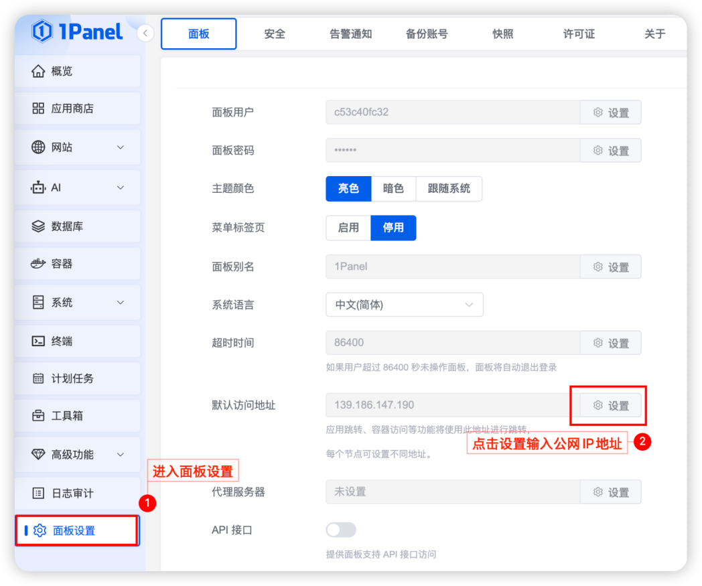
步骤九：升级到V2.1.0最新版本（可选）
对于已有1Panel，登录面板后，点击右下角更新，将当前1Panel更新升级到v2.1.0版本。
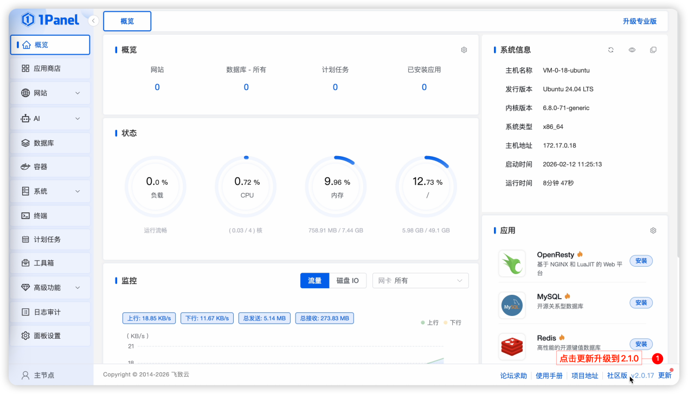
大语言模型API申请
大家可以参加OpenClaw官网支持的模型列表，分别获取大语言模型的API Key，本次以DeepSeek为例。其它公有模型和本地模型大家自行参考相关文档准备。
步骤一：DeepSeek开发者平台注册
进入DeepSeek 开发者平台：https://platform.deepseek.com/ ，首先完成个人实名认证并注册，并完成充值。如下图所示：
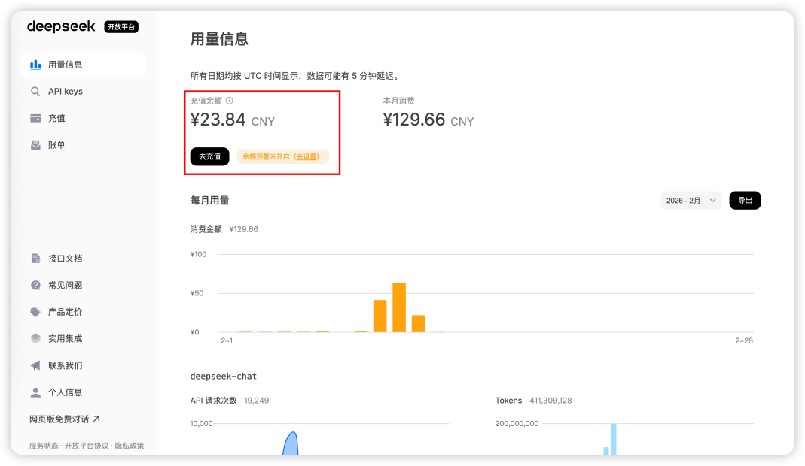
步骤二：获取DeepSeek的API key
如下图所示，进入API keys，点击创建API key，创建完成后将API Key妥善保管，方便后续使用。
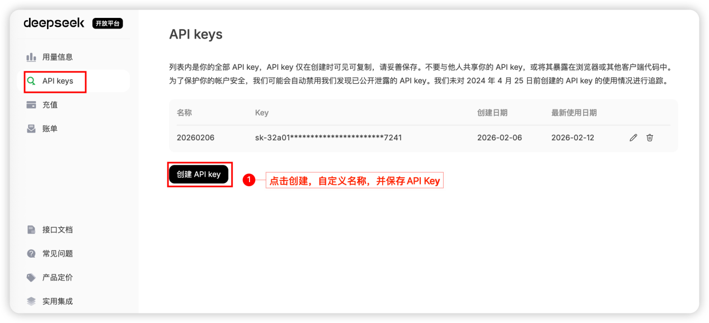
OpenClaw安装部署
OpenClaw的安装基于1Panel的智能体管理进行部署，在部署过程中我们需要结合上一步骤DeepSeek大模型的API key。在1Panel中将OpenClaw的部署以及大模型API key账号的管理分为两部分进行，将二者进行了解绑，主要是为了方便大家进行OpenClaw个人助理的模型配置调整。
步骤一：添加模型账号
进入「AI」管理中的「智能体」管理菜单，点击进入后首先切换进入「模型账号」管理，点击「添加模型账号」，然后按照模型账号创建要求选择模型供应商并输入模型账号信息，完成模型账号创建。
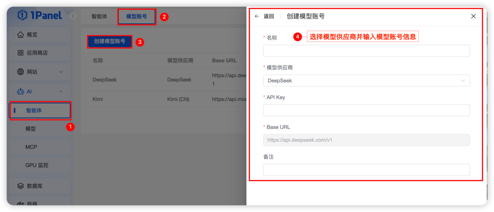
步骤二：创建智能体
准备好模型账号后，切换进入「智能体」，点击创建智能体，根据要求输入相关参数即可。具体参见如下图所示：
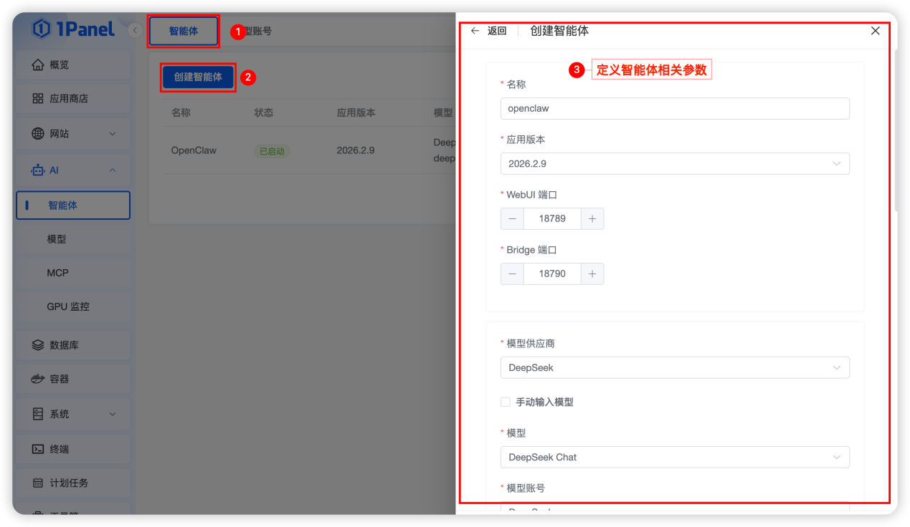
其中创建智能体过程中的参数定义参见如下详细说明：
- 名称：默认openclaw，可以自定义作为容器的名称；
- 应用版本：指OpenClaw的版本，如上图默认为当前最新的版本2026.2.9；
- WebUI端口：OpenClaw默认的端口为18789，可自行定义端口且确保已开通；
- Bridge端口：OpenClaw默认的端口为18790，可自行定义端口且确保已开通；
- 模型供应商：当前支持的模型如图所示，这里选择刚才添加的DeepSeek 模型供应商，如果已添加对应模型供应商的模型，则会直接提醒模型账号数量；
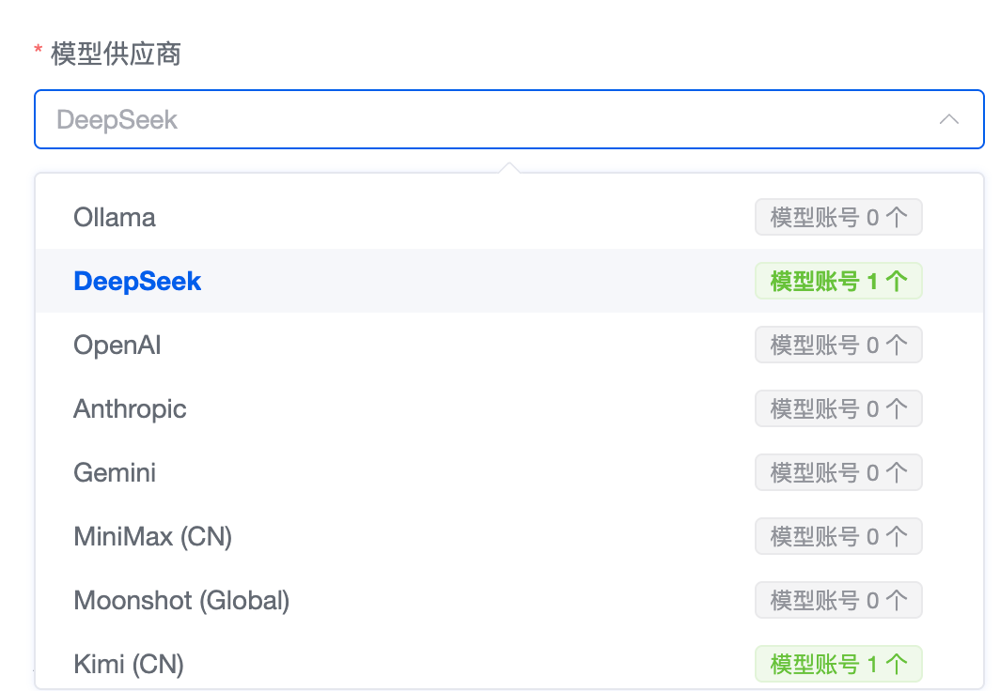
- 其他模型参数：选择模型供应商后，系统会自动获取已经维护的模型账号，如下图所示，也可勾选「手动输入模型」自行输入，如未创建模型账号，点击「创建模型账号」完成创建即可。
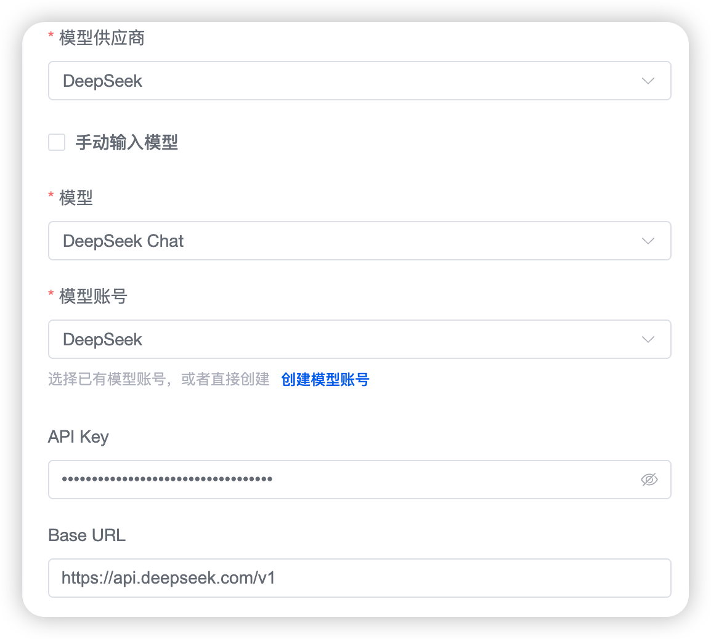
- Token：为OpenClaw 的Web UI访问地址的token，这里系统会自动生成，方便后续直接访问。
- 其他参数：其他参数均保持默认配置即可。
以上参数配置完成后，直接点击确认，OpenClaw开始安装。直到如下图所示，代表完成安装。
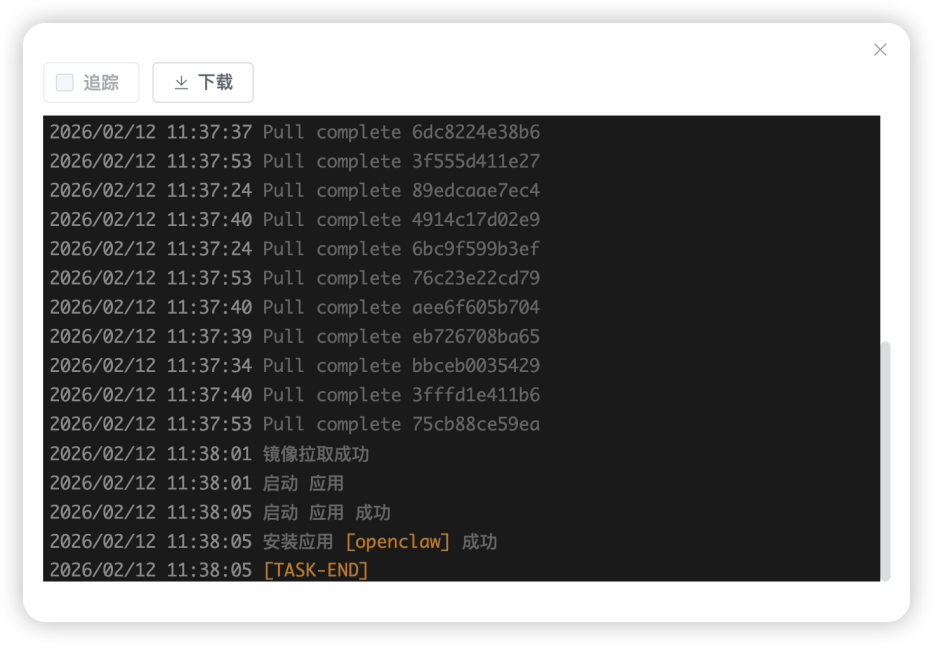
步骤三：验证OpenClaw部署成功
OpenClaw安装部署完成后，进入智能体列表页面，如下图所示，点击WebUI直接跳转即可进入OpenClaw页面。
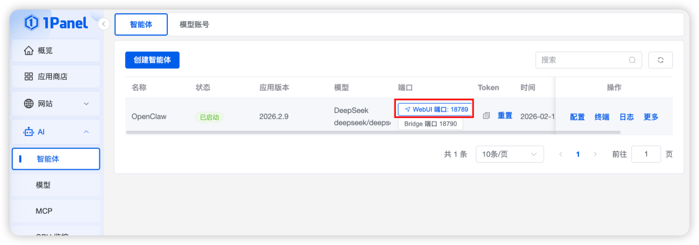
进入OpenClaw页面后，输入信息看AI助理是否回复，如有正常回复，如下图所示，说明确认OpenClaw部署成功。

飞书渠道配置
截止目前，整个OpenClaw已经完全部署完成，我们接着在配置下飞书渠道。配置飞书渠道我们首先需要在飞书中创建一个可用的机器人，参照如下步骤逐步完成即可。
说明：本次介绍使用的是飞书个人账号，如果是企业账号则版本发布以及权限授权需要进行管理员审批，其他操作步骤一致。
步骤一：创建企业自建应用
首先我们登录飞书进入飞书开放平台（链接：https://open.feishu.cn/app?lang=zh-CN ）进入「开发者后台」，选择「企业自建应用」，点击「创建企业自建应用」，如下图所示：
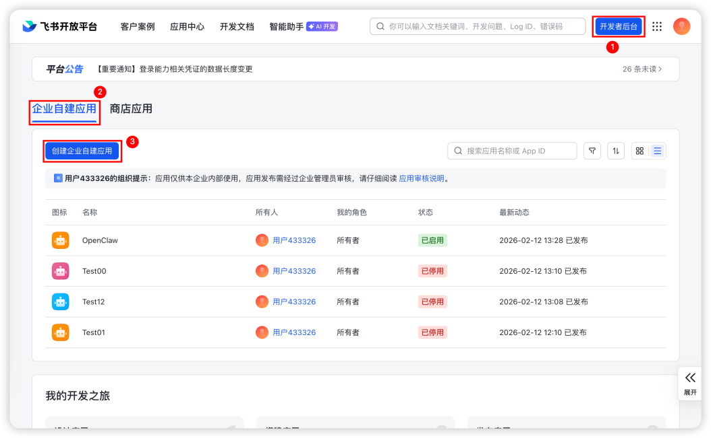
如下图所示，根据要求输入相关应用名称以及基本信息点击创建即可。
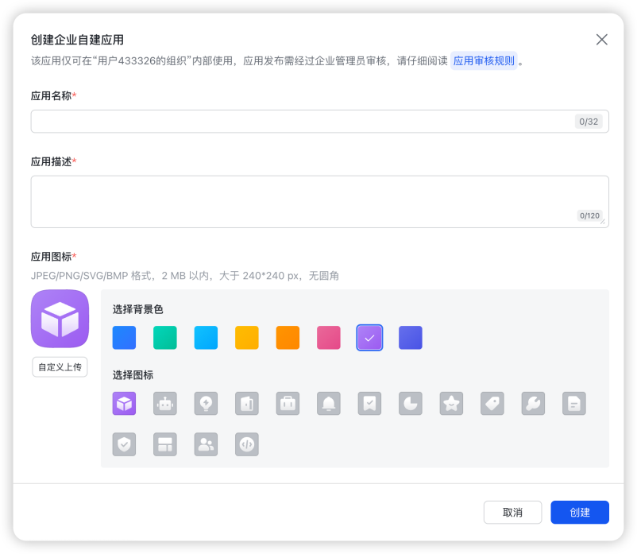
步骤二：创建机器人
如下图所示，点击创建机器人，完成机器人创建。
进入机器人页面后，点击机器人配置后的编辑按钮，定义机器人名称，如下图所示：
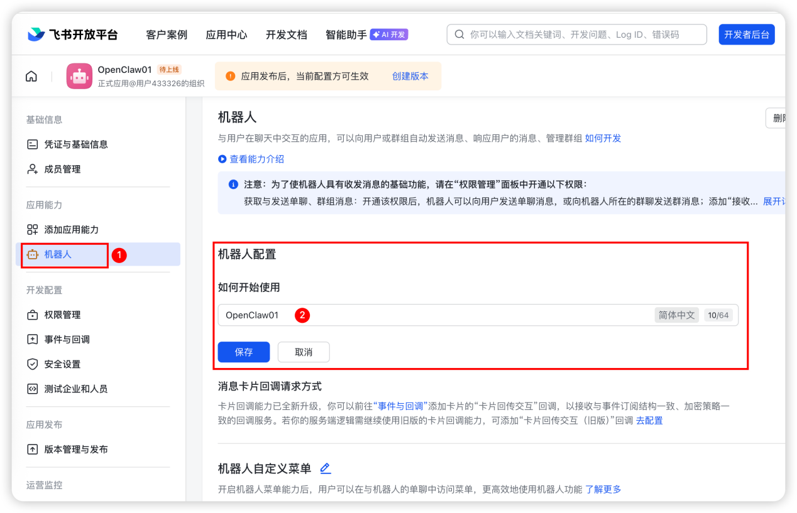
步骤三：权限配置
完成机器人创建后，点击进入「权限管理」，并点击「批量导入/导出权限」。
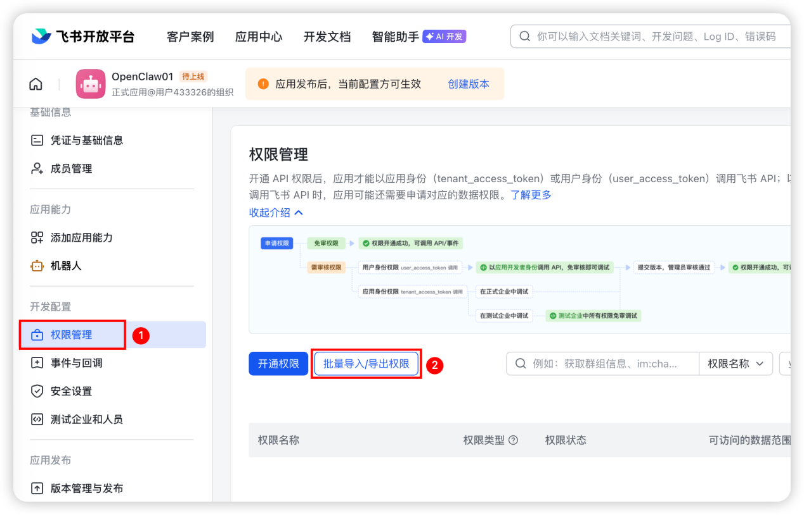
点击「批量导入/导出权限」，清空默认配置权限信息，将如下所示权限授权脚本复制粘贴，点击保存即可。
{
"scopes": {
"tenant": [
"aily:file:read",
"aily:file:write",
"application:application.app_message_stats.overview:readonly",
"application:application:self_manage",
"application:bot.menu:write",
"cardkit:card:write",
"contact:contact.base:readonly",
"contact:user.employee_id:readonly",
"corehr:file:download",
"docs:document.content:read",
"event:ip_list",
"im:chat",
"im:chat.access_event.bot_p2p_chat:read",
"im:chat.members:bot_access",
"im:message",
"im:message.group_at_msg:readonly",
"im:message.group_msg",
"im:message.p2p_msg:readonly",
"im:message:readonly",
"im:message:send_as_bot",
"im:resource",
"sheets:spreadsheet",
"wiki:wiki:readonly"
],
"user": [
"aily:file:read",
"aily:file:write",
"contact:contact.base:readonly",
"im:chat.access_event.bot_p2p_chat:read"
]
}
}粘贴后，效果如下图所示：
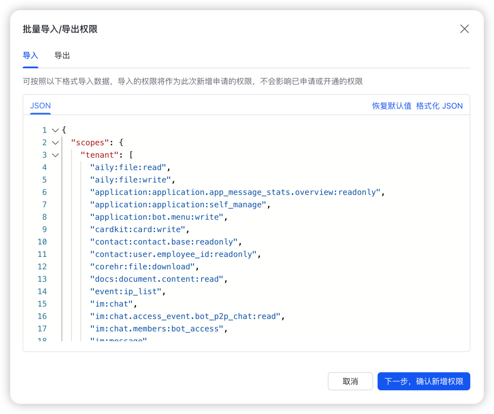
点击「下一步，确认新增权限」，并最终确保所有权限均已开通。其中个人用户自行确认企业账户需要管理员审核。确保所有权限均已开通，如下图所示：
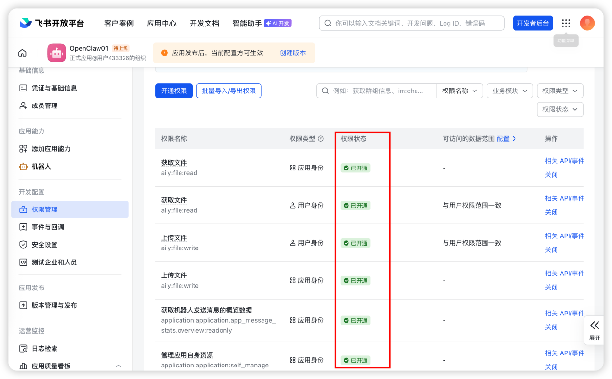
步骤四：获取凭证并1Panel配置
进入飞书平台在「凭证与基础信息」中获取应用凭证，如下图所示：
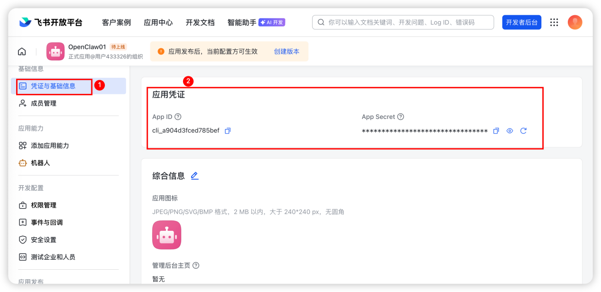
获取后，进入1Panel的「智能体」的「配置」页面，完成飞书聊天渠道配置，点击保存，如下图所示：
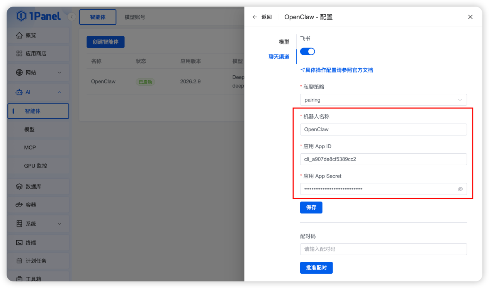
步骤五：创建事件与回调
如下图所示，进入「事件与回调」菜单，分别完成订阅方式设置以及事件添加。
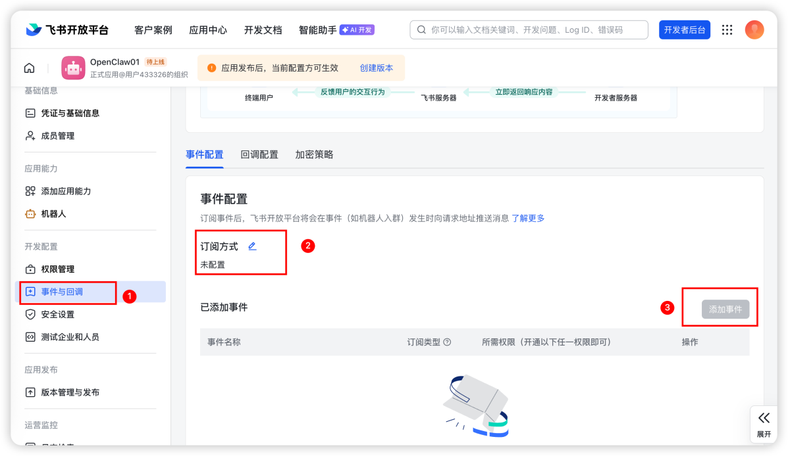
订阅方式设置：参照如下图选择长链接订阅方式：
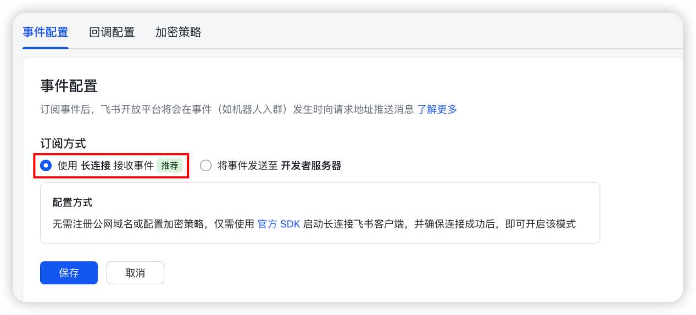
添加事件：输入im.message.receive_v1搜索，基于「应用身份订阅」勾选接收消息，最后确认添加即可。
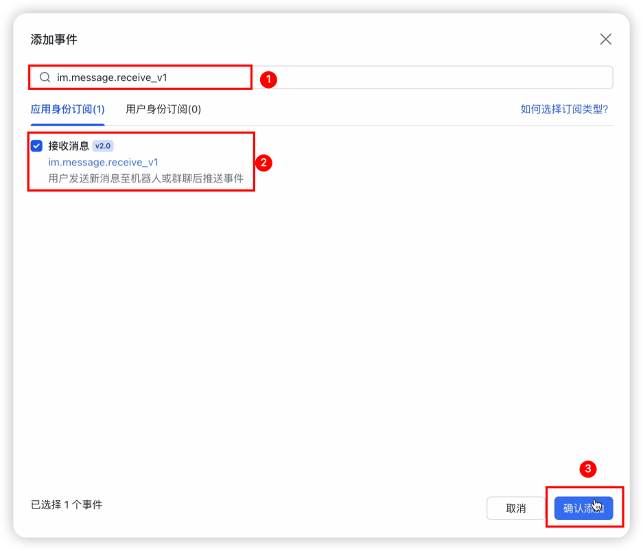
步骤六：创建并发布版本
确认完成后点击「创建版本」，然后根据要求输入版本相关信息并发布，个人账号无需审批，企业账号需要进行企业审批。
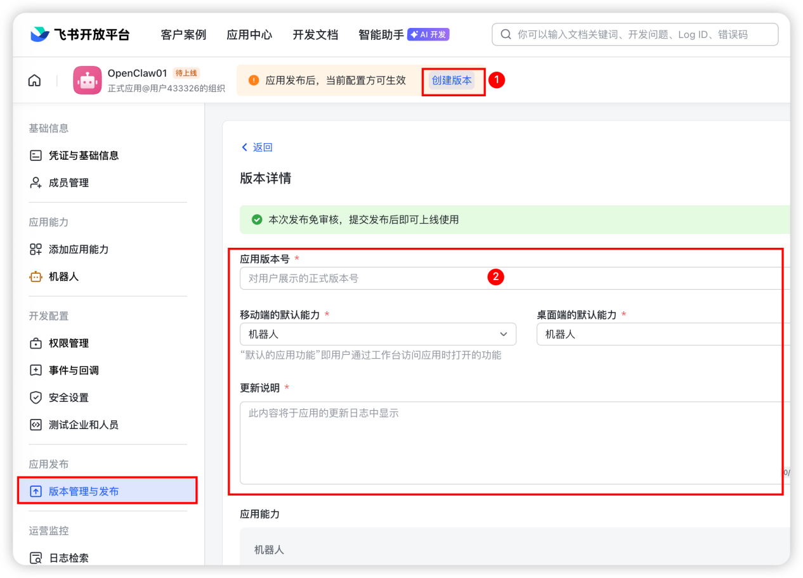
步骤七：飞书渠道验证确认
以上信息配置完成后，我们进入飞书客户端，如下图打开应用：
最后我们再进行简单尝试，如下图所示即代表配置成功。
模型配置修改
如果在OpenClaw个人AI助理使用时，需要切换模型，同样进入「智能体」列表，点击「配置」，进入模型切换菜单，完成模型配置修改点击「保存」即可。如下图所示：
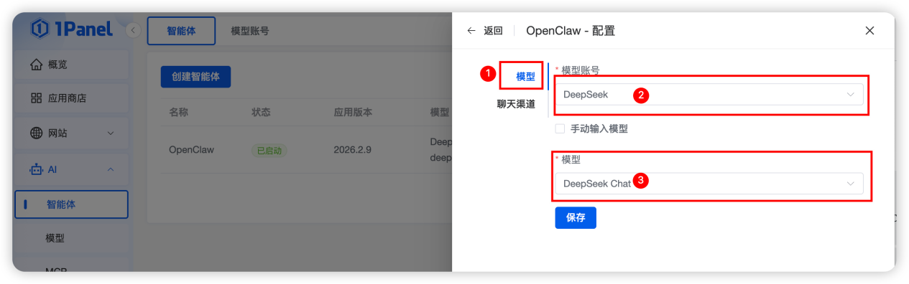